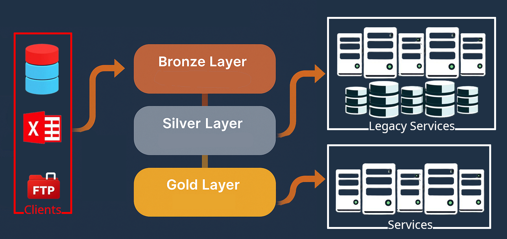

(S)ituation: In 2024 at Seedz, a data-driven agritech platform, faced recurring data issues such as missing submissions, incorrect scoring, and degraded service performance. These challenges affected key components of the loyalty program, which had already enabled BRL 10+ billion in transactions.
(T)ask: I led the Data Quality team to develop a solution that would automate the detection of data issues and provide real-time alerts to stakeholders. The goal was to enhance data integrity and operational efficiency.
(A)ction: We developed a two-phase strategy. In Phase 1, we built modular microservices to continuously validate data flow across the pipeline, from ingestion to consumption. These services generated alerts for any detected issues. In Phase 2, we designed interactive dashboards to visualize data integrity trends and enable real-time monitoring.
(R)esult: We successfully automated a wide range of recurring analyses, reducing investigation times from days to seconds. This significantly improved operational agility and confidence in our data ecosystem. The second phase is currently underway, focusing on stakeholder interviews to refine dashboard designs and reporting tools.
As a Software Engineering Manager at Seedz (2024), I led the Data Quality team, responsible for ensuring the accuracy and integrity of data across our entire pipeline. Seedz is committed to transforming the agribusiness ecosystem through solutions such as a loyalty program that boosts sales campaigns by offering rewards to sellers and cashback to customers. Operating in 10 countries, our platform has supported financial transactions exceeding BRL 10 billion.
Like many fast-growing companies, we faced recurring issues reported by Client Managers and stakeholders, often leading to frequent analysis requests. To address these concerns, I mapped and categorized the most common types of requests and complaints:
Each issue could have multiple root causes, often unique and non-repetitive. It became clear that without a structured detection mechanism, many of these problems would persist. After mapping the data pipeline and analyzing historical reports, I found that most issues originated from three critical stages: data ingestion, data movement across databases, and scoring. Seedz’s data architecture follows a medallion model:
However, due to legacy constraints, many platform services continued to rely on isolated databases (e.g., MySQL, MongoDB), bypassing the Gold layer. This created additional complexity, often requiring Silver-layer data to be synchronized with service-specific databases.
 Figure 1: Illustration of the data pipeline architecture, showcasing the flow of data across the Bronze, Silver, and Gold layers.
To address these challenges, I developed a two-phase action plan:
Monitoring was categorized into three domains:
Each monitoring tool was implemented as a microservice using a 3-tier architecture (Data Layer, Logic Layer, Presentation Layer) to ensure scalability, maintainability, and separation of concerns. Most were deployed as APIs using Python, containerized via Docker, and orchestrated within our AWS environment. With this first phase complete, Seedz was able to automate a broad range of recurring analyses and trigger alerts in near real time. As a result, investigations that previously took days were reduced to seconds, significantly improving operational agility and confidence in our data ecosystem.
The second phase is currently underway. We are conducting interviews and discovery sessions with internal stakeholders—including Client Managers, Product Owners, and Operations Analysts—to better understand their needs and priorities. The goal is to identify which monitoring insights are most valuable and how to present them effectively through visual interfaces. These findings will guide the development of dashboards and reporting tools that enable proactive decision-making, improve transparency, and support our broader data governance efforts.